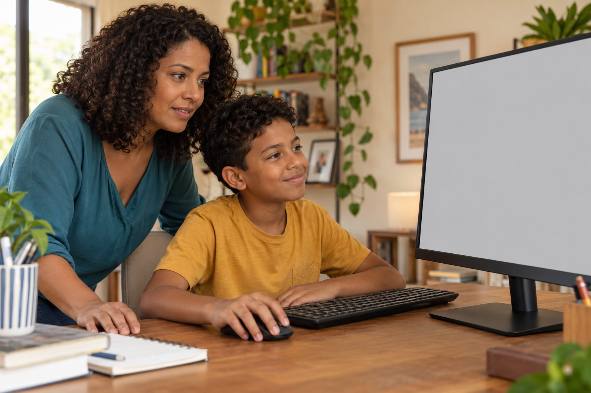
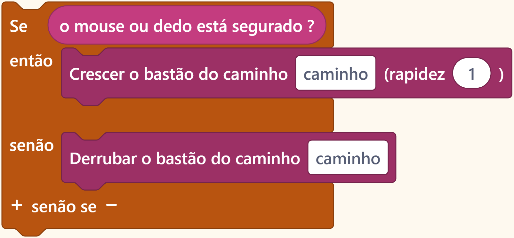
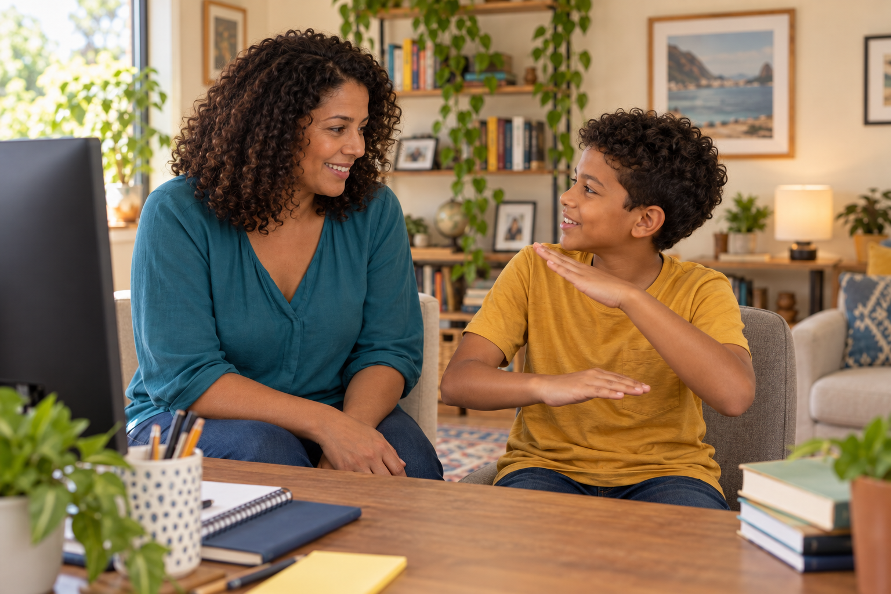

Teste em casa
Você pode conversar sobre o que seu filho aprendeu, mesmo sem saber programar.
Comece pedindo para ele mostrar o que fez.

Você pode conversar sobre o que seu filho aprendeu, mesmo sem saber programar.
Comece pedindo para ele mostrar o que fez.

Pergunte: ‘O que acontece nessa parte?’
Deixe ele explicar e depois mostrar o jogo funcionando.
Neste exemplo, segurar o botão do mouse faz uma ponte crescer.
Ao soltar, ela cai em direção à próxima plataforma.
Agora pergunte: ‘O que acontece se você segurar por mais tempo?’
Ele pode contar o que espera e fazer o teste com você.
Outra pergunta é: ‘Como você fez essa parte?’

Ele pode mostrar a instrução que liga o mouse ao tamanho da ponte.
Essas perguntas ajudam a acompanhar o raciocínio dele.
Se ele não souber explicar alguma coisa, vocês podem procurar juntos onde ficou a dúvida.
Aqui mostramos formas simples de acompanhar a criação de jogos.

Siga o perfil para participar desse aprendizado.